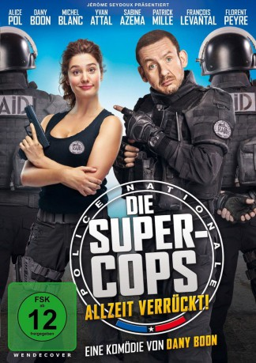

#7550 Die Super-Cops - Allzeit verrückt!
 
 IMDB-Wertung: 5.4 / 10
IMDB-Wertung: 5.4 / 10  Metascore: 0
Metascore: 0 
Johanna ist Polizistin aus Leidenschaft. Dabei schießt sie gerne übers Ziel hinaus. Sie verhaftet Parksünder, ringt verängstigte Opfer nieder und hilft auch mal Bankräubern, die Beute im Auto zu verstauen. Johanna ist ein Alptraum und besessen von dem Wunsch, zu den Supercops der Elite-Einheit RAID zu gehören. Um ihren Traum mit Realität zu kurieren, verschafft ihr der Innenminister-Papa eine Probezeit bei der RAID. Übermotiviert und mit geballter Tollpatschigkeit wirft sich Johanna auf ihre neue Aufgabe. Die Terror-Gang des berüchtigten „Leopard“ soll endlich unschädlich gemacht werden. Doch mit Johanna in ihren Reihen muss die RAID so einen Einsatz erstmal überleben …
Jahr: 2016
Dauer: 106 Minuten
FSK: 12
Land: Frankreich Studio: Ascot Elite Entertainment GroupTonspuren:
Untertitel: Deutsch,
Auflösung: 1080p (1920x800) Größe: 4577 MB
Genre: Action, Komödie
Regisseur: Dany Boon
Drehbuch: Dany Boon
Soundtrack:
Darsteller:
 Alice Pol als Johanna Pasquali
Alice Pol als Johanna Pasquali Dany Boon als Eugène Froissard
Dany Boon als Eugène Froissard Michel Blanc als Jacques Pasquali
Michel Blanc als Jacques Pasquali Yvan Attal als Viktor
Yvan Attal als Viktor- Sabine Azéma als Marie-Caroline Dubarry
 Anne Marivin als Isabelle, la psychologue du RAID
Anne Marivin als Isabelle, la psychologue du RAID- Nabila Darbaky als Samia, la secrétaire de Legrand
- Frédéric Siuen als Julien N'Guyen
 Arben Bajraktaraj als Drago Vladic
Arben Bajraktaraj als Drago Vladic Jean-François Cayrey als Le commissaire Colin
Jean-François Cayrey als Le commissaire Colin- Audrey Looten als La vendeuse boutique robes
- Ksenia Thurgood als Journaliste radio , uncredited
- Patrick Mille als Edouard Dubarry
- François Levantal als Patrick Legrand
- Florent Peyre als Olivier Lopez
- Alain Doutey als Bernard Dubarry
 Urbain Cancelier als Le président de la République
Urbain Cancelier als Le président de la République- François Vincentelli als Eric Scherz
- Franck Arditti als Nicolas Delvaux
- Guillaume Clément als Le médecin du RAID
- Akim Omiri als Yanis Brahimi
- Narcisse Mame als William Rousseau
- Gil Alma als Greg Martel
- Tony Zarouel als Frédéric Bessac
- Robert Paturel als Aimé
- Sâm Mirhosseini als Ivan
- Arnaud Maillard als Le policier Gay Pride
- Dan Cohen als Le maître d'hôtel
- Fayçal Safi als L'islamiste 1
- François Bureloup als Le patron du café salle des ventes
- Stéphane Pezerat als Technicien camion 1
- Samuel Churin als Le collègue de garde
- Machita als Collègue Jo machine à café 1
- Alexandre Texier als Collègue Jo machine à café 2
- Jacques Marchand als Le vieux préfet
- Daniel-Jean Colloredo als Le directeur de la joaillerie
- Alexandre Blazy als L'agent Sécuriatis 1
- Jean-Marc Charrier als Chauffeur vrai fourgon
- Marc Harari als Commissaire-priseur salle des ventes
- Sarah Kaminsky als Journaliste LCI live
- Antoine Bonnefille-Roualet als Journaliste LCI plateau 1
- Aida Asgharzadeh als Journaliste LCI plateau 2
- Patrick Brossard als Spécialiste banlieues TV
- Guy Amram als Agent GSPR
- Nathan Dellemme als Agent du RAID , uncredited
- Zina Esepciuc als Femme en rouge , uncredited
- Zbigniew Jankowski als Délégué , uncredited
- Alain Laub als Négociateur RAID , uncredited
- Michaël Mercier als Homme d'affaires , uncredited
- Jérémy Parisi als Stagiaire du RAID , uncredited
Datei: X:\2016(N-Z)\Super-Cops - Allzeit verrückt!, Die (2016, FSK12, 1920x800).mkv seit 20.11.2017
Festplatte: HD 2016(A-Z)
 Es gibt insgesamt 182 Filme in der Gruppe '2016(N-Z)'
Es gibt insgesamt 182 Filme in der Gruppe '2016(N-Z)'